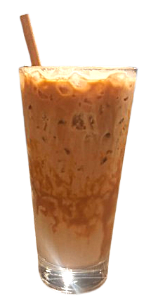

Über mich

Hi, ich bin Majbrit Schöttner.
Ich habe einen Bachelor in Medieninformatik abgeschlossen und studiere derzeit Informatik im Master.
Mich begeistert es, mit mathematischen Konzepten visuelle Projekte zu gestalten. Dazu gehört beispielsweise, Figuren anhand mathematischer Funktionen zu modellieren, sie mittels Inverser Kinematik zu animieren oder physikalische Systeme für Spiele zu entwickeln.
Räumliches Denken fällt mir leicht und bereitet mir Freude, weshalb ich mich besonders gerne mit 3D-basierten Problemstellungen beschäftige, etwa in den Bereichen Simulation, Spieleentwicklung, Computergrafik und algorithmische Modellierung. Ganz besonders fasziniert mich dabei die Realisierung immersiver Erlebnisse in Virtual und Augmented Reality.
Zusätzlich verfüge ich über fundierte Erfahrung in der digitalen Barrierefreiheit, die ich im Rahmen meines Studiums, Nebenjobs, in einem Praktikum sowie in meiner Bachelorarbeit gesammelt habe.
Ausgleich und Inspiration finde ich im Yoga und Fitness, aber auch beim Malen mit Aquarell und Fineliner.

Hurra! Du hast den Eiskaffee gefunden!
Kaffee ist der Treibstoff eines jeden Informatikers. Ich trinke meinen am liebsten kalt.